Getting started with CSAT
CSAT sends a short satisfaction survey when a ticket reaches the status you choose, then collects the ratings and comments where your team can read them. This guide takes you from installing the app to reading your first results. Setup runs about ten minutes, and most of that is deciding what to ask rather than clicking through screens.
Before you begin
CSAT works alongside a service board you already run. Three things need to be true before it can do anything useful.
- Admin rights on a monday.com account with monday service. Only account admins can install apps.
- A status column that marks work as finished. Most service boards already have one, usually with a label like Done or Resolved.
- A field holding the customer's email address. Normally an email column, or the requester on tickets that arrive by form or email intake.
If the third one is missing, set it up first. CSAT has no way to reach a customer whose address it cannot find, and it will not guess.
1Install CSAT
In monday.com, click the apps icon in the top right and open the Apps marketplace. Search for CSAT for monday, open the app page, then click Install and confirm which account you are installing into.

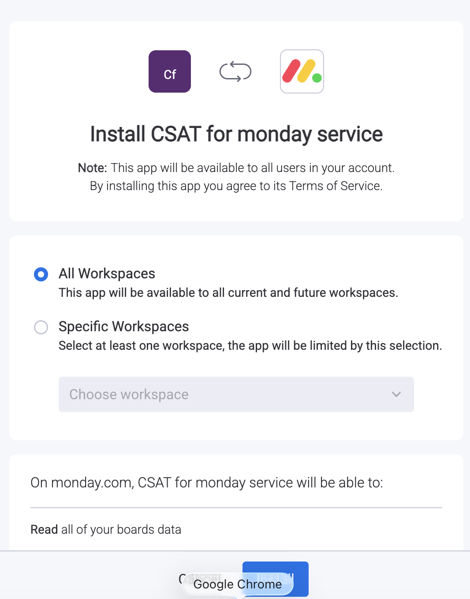
Installing adds CSAT to your account and nothing else. No survey reaches anyone until you build a configuration and switch it on, which happens in step 3.
2Authorize access
The first time you open CSAT, monday.com shows you exactly what the app is asking for. CSAT requests the narrowest set of permissions that lets it work. It reads board and item data so it can tell when a ticket changed status and who the customer is, and it writes back so results appear where you expect them.
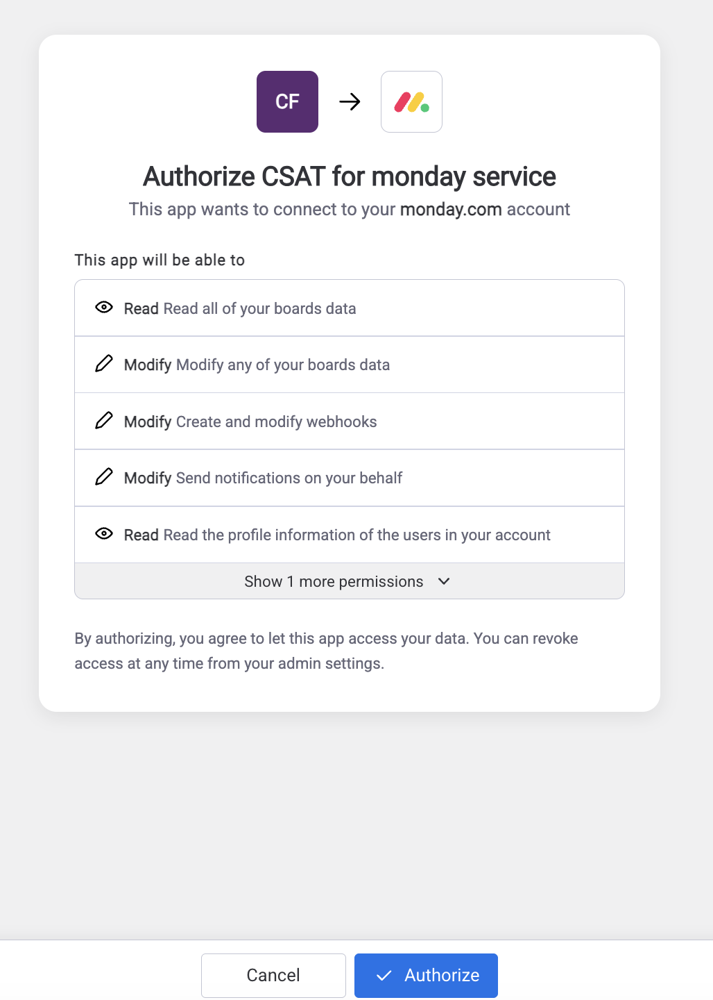
Worth a moment
Read the list before approving. If anything on it looks wider than what is described here, stop and write to us rather than approving and asking afterwards.
Click Authorize and you land back in CSAT, ready to build a survey. If you later revoke this authorization, CSAT stops working straight away and begins removing your data.
3Build your first survey
This is the part worth slowing down for. Everything that follows depends on these choices. Open CSAT and click [create button label].

Pick the board
One configuration covers one board. If you run several service boards, set each one up separately. That is more clicks, but it lets each team ask its own questions.
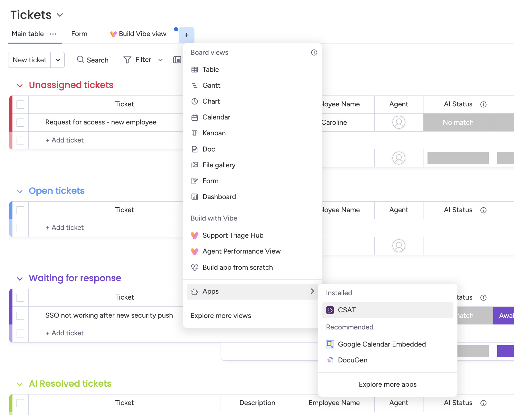
Pick the trigger status
Choose the status that means the ticket is finished from the customer's point of view. For most teams that is Done or Resolved.
Think twice about statuses like Waiting on customer or Pending review. A survey arriving at that moment reads as though you consider the matter closed when the customer does not.
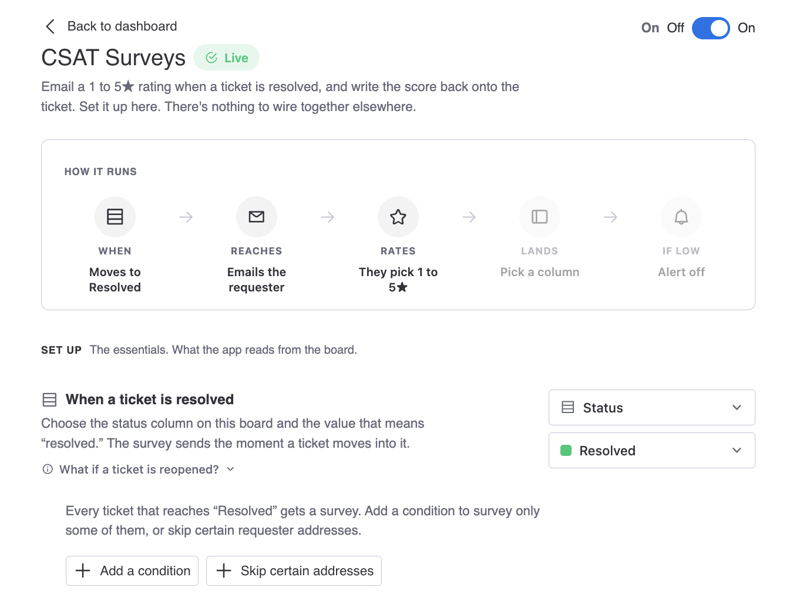
Point CSAT at the email address
Tell CSAT which field holds the customer's address. Depending on how your board is built, this is an email column or the requester on the ticket.
When that field is empty on a ticket, CSAT skips it quietly. Nothing sends and nothing errors. If a survey you expected never appeared, an empty address field is the first thing to check.

Write the questions
Every survey opens with a one to five star rating. That question is fixed, because it is the number every report is built from.
Below it you can add a few follow up questions. Keep the list short. Response rates fall away quickly past two or three questions, and a rating with no comment is still useful while an abandoned survey is not. A pattern that works well is one rating, then one open text box asking what would have made the experience better.
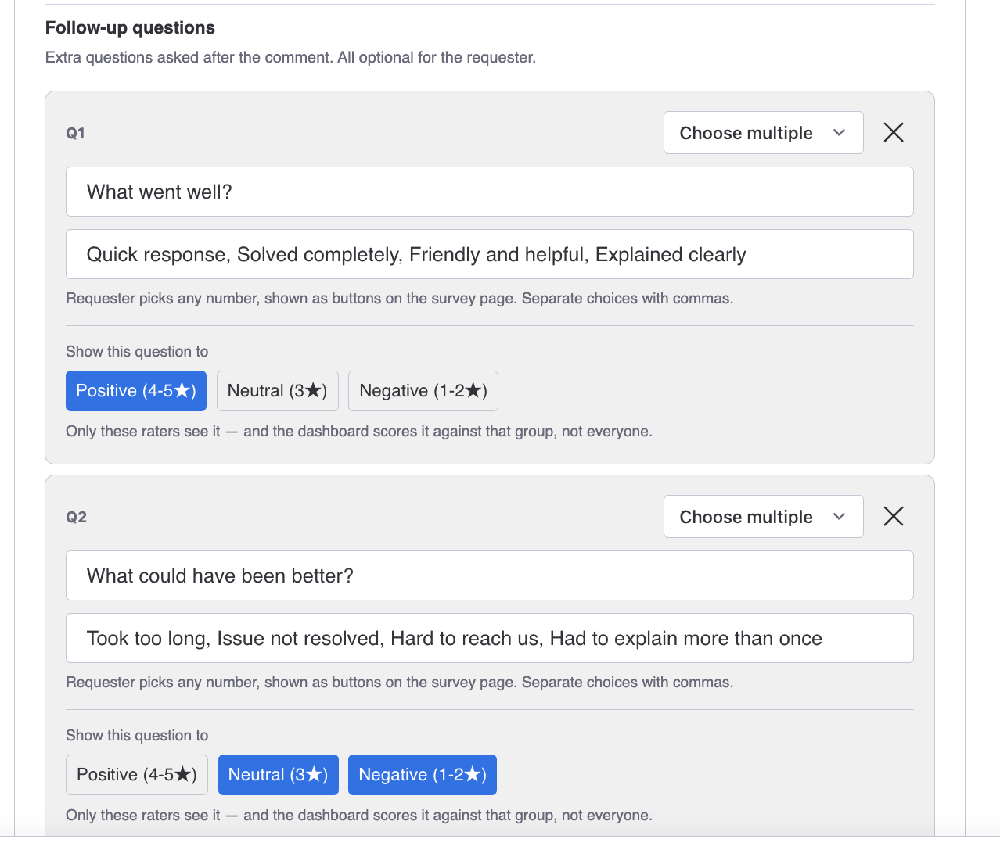
Write the email
Your customer receives an email inviting them to rate the ticket. You control [subject, greeting, sign off, per the fields in the app].
Write it the way someone on your team would write it, because from the customer's side that is what happened. Name the ticket so they remember which conversation you mean, and keep it to a few lines.
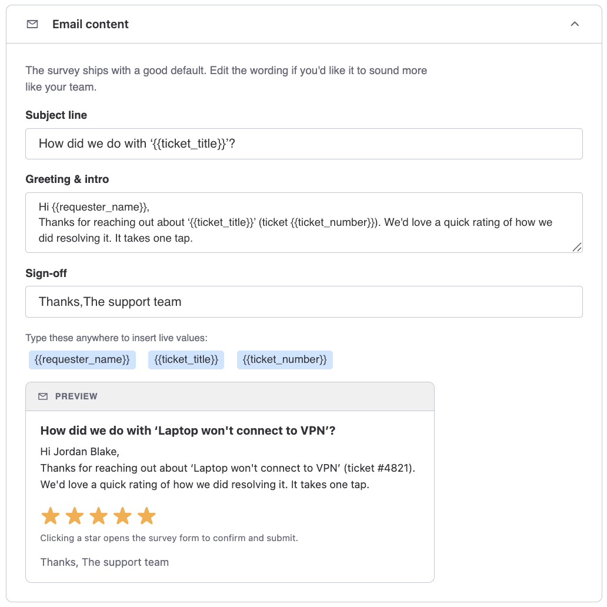
Set exclusions
Some addresses should never receive a survey. Internal staff who file tickets for other people, shared inboxes, monitoring systems, and any customer who has asked you to stop. Add those addresses to the exclusion list for this board, and CSAT checks the list before every send.
How to treat this list
Addresses on the exclusion list are stored as you typed them, not scrambled, so the list itself counts as customer data. Add addresses you are already holding for other reasons, and nothing more.
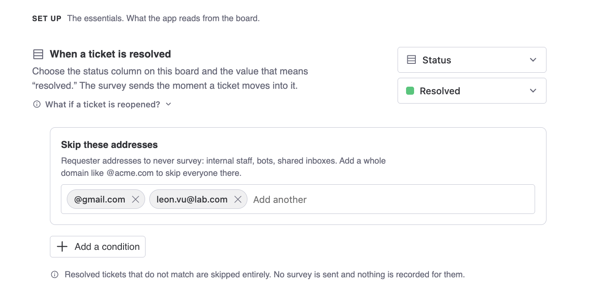
Test once, then switch it on
Nothing sends while the configuration is off. Before you turn it on, run a single test. Put your own address on a ticket that belongs to you, move it into the trigger status, then watch the email arrive, click through, submit a rating, and confirm it lands on the dashboard. Five minutes there saves an awkward first impression with a real customer.
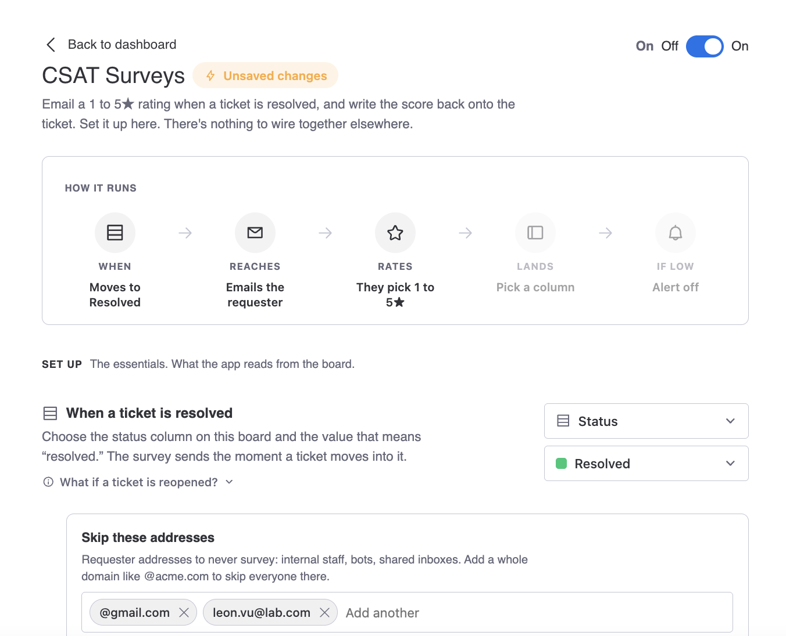
4How surveys get sent
Once a configuration is active the sequence runs without anyone touching it. An agent moves a ticket into the trigger status, CSAT notices, finds the address, runs its checks, and sends. Agents have no button to press and nothing to remember. That is the point.
When CSAT does not send
CSAT holds back in five situations, each of them deliberate.
- The ticket has no email address in the mapped field.
- The address is on this board's exclusion list.
- The customer opted out of CSAT surveys previously.
- This ticket was already surveyed recently. See repeat protection below.
- Earlier mail to that address bounced, so CSAT stopped writing to a dead mailbox.
Delivery is normally quick, though the message passes through an email provider and ordinary email delays apply.
5What your customer sees
They receive your email and click through to a plain page showing the ticket and the star rating. They choose a rating, answer your follow up questions, and submit. No account, no signup, nothing to install.


After they submit, a short confirmation appears and the link stops accepting answers, so a forwarded email cannot be used to rate the same ticket twice.
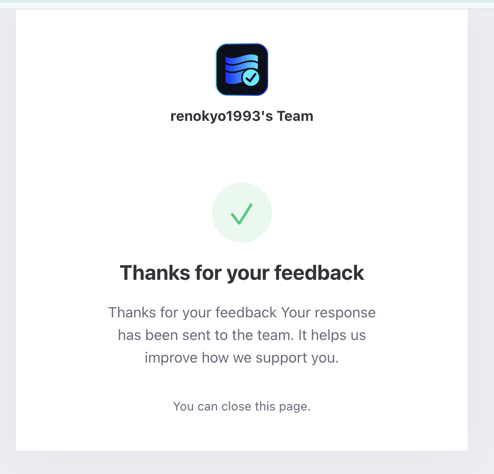
Repeat protection
CSAT records that a ticket has been surveyed, so reopening and re resolving it does not ask the same person the same question again. That record expires after roughly three months, which means a ticket reopened much later can be surveyed again as genuinely new work.
Opting out
Every survey email carries an unsubscribe link. A customer who uses it receives no further CSAT surveys from you, on any board.

6Read your results
Open CSAT from the board to see the ratings collected there: the overall picture, how it is moving over time, and every individual response including whatever customers wrote.
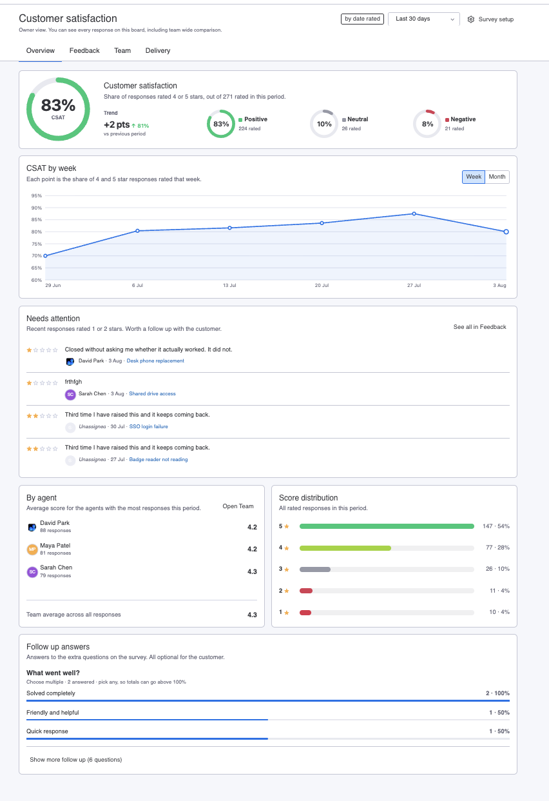
The written comments are usually where the value sits. A score tells you something changed. A comment tells you what to do about it.
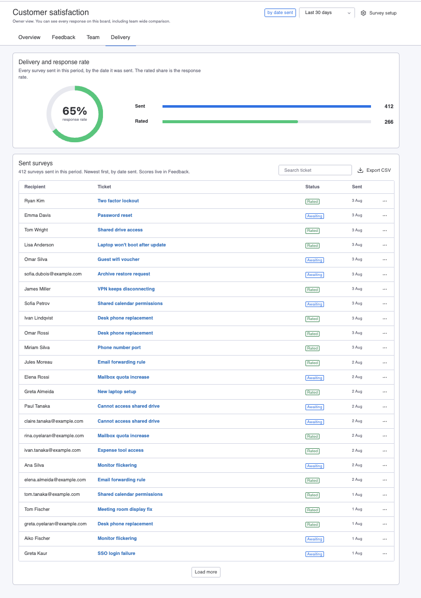
Results can be read for the team as a whole and broken down by the agent who handled each ticket, so agents can see feedback on their own work.
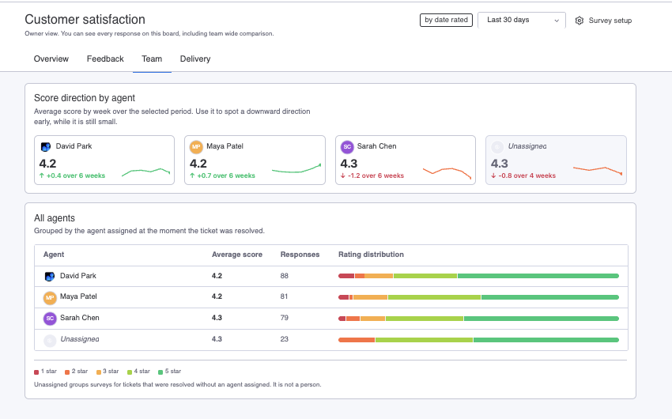
Reading small numbers
In the first weeks you will have few responses, and one unhappy customer swings the average hard. Treat early numbers as a signal that the mechanism works, not as a verdict on the team.
Who can see what
Decide this before you switch a configuration on rather than after, because it changes who inside your company sees customer contact details.
Agents can see which customer left a given response. Where a display name exists, the display name appears. Where CSAT holds only an email address, the email address appears.
That is what makes per agent feedback useful, and it is also more exposure than some teams want. If it does not suit yours, raise it with us before rolling CSAT out to the whole desk.
Privacy in brief
CSAT handles your customers' email addresses and whatever they write in a survey, so here is the short version. The full detail, including every sub processor, retention period, and what happens when you uninstall, is in the [privacy policy URL].
Survey data is stored outside monday.com in a managed Postgres database, encrypted at rest and in transit. Email is sent through a third party email provider.
Two points sit here rather than buried in the policy, because they tend to surprise people.
- Agents can see customer identities, including raw email addresses where no display name exists, as described above.
- When someone unsubscribes, CSAT keeps a scrambled version of their address so it can keep honoring that request. Deleting it outright would mean forgetting that they asked you to stop.
Get help
Email support@aiverylabs.com, or open a request at [support portal URL].
Include your monday.com account name, the board, the ticket that did or did not behave as expected, and roughly when it happened. That is usually enough for us to find it.